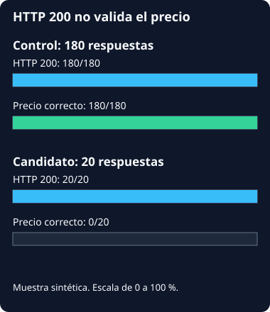

CI/CD: una release defectuosa y su recuperación
Datos de un laboratorio local. Los controles recorren evidencia archivada; no despliegan, cambian flags ni conectan a Docker.
Cargando captura…
Hechos completos de la fase
Muestra archivada del canary
Esta sección usa siempre la fase canary_exposed: dos claves sintéticas por cada bucket, 200 lecturas en total. No son usuarios reales ni una estimación estadística de producción.
| Bucket | Slot | HTTP | priceCents | Resultado | Clave sintética |
|---|
Etapas del pipeline local
Tests y controles del fixture; el candidato tiene un fallo intencional y no recibe promoción. Audit de dependencias runtime, sin scan del sistema operativo o firma.
| Etapa | Estado observado |
|---|
Comparación de HTTP y precio por grupo

Sin disponibilidad continua, Kubernetes, pipeline remoto, backup restore o usuarios de producción verificados.